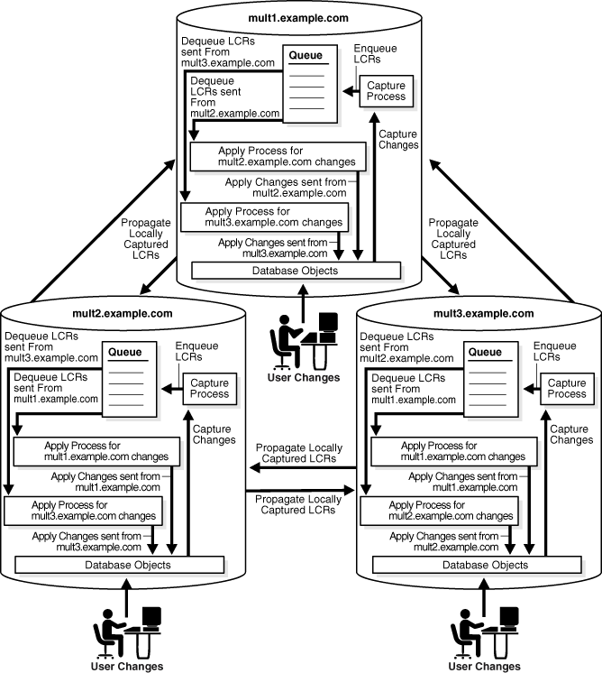
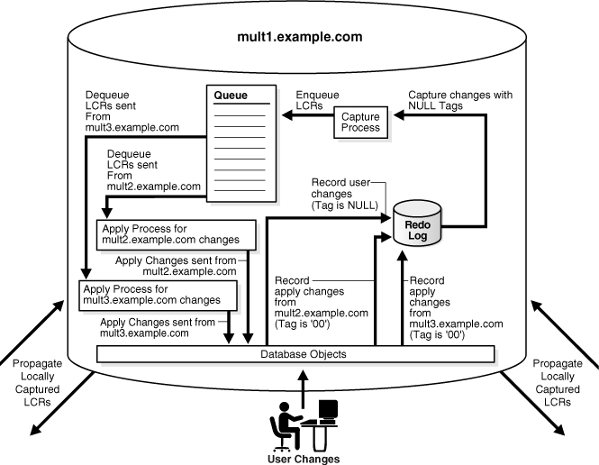
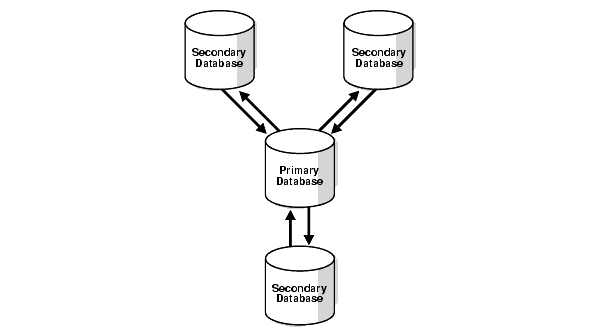
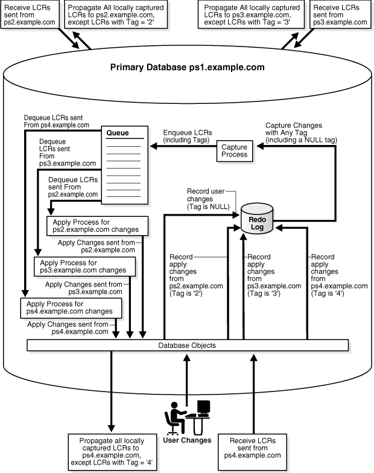
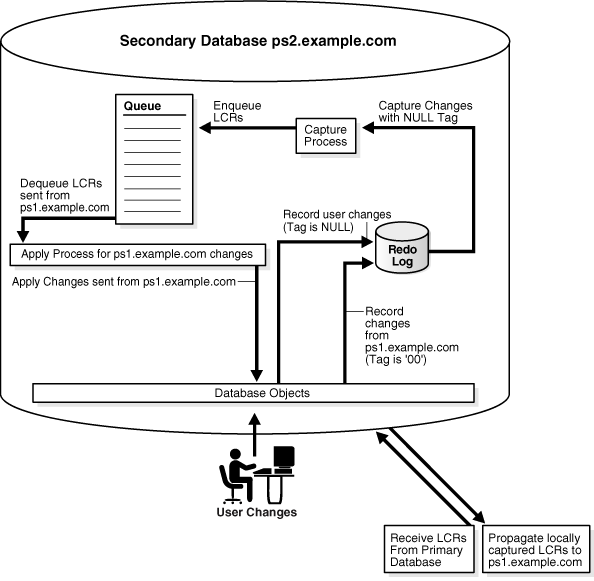
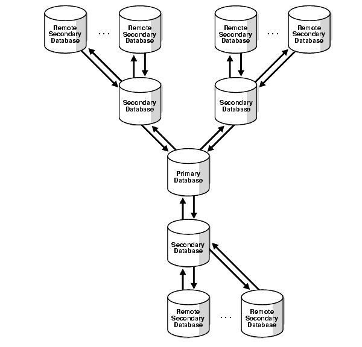

10 Oracle Streams Tags
This chapter explains the concepts related to Oracle Streams tags.
This chapter contains these topics:
See Also:
10.1 Introduction to Tags
Every redo entry in the redo log has a tag associated with it. The data type of the tag is RAW. By default, when a user or application generates redo entries, the value of the tag is NULL for each redo entry, and a NULL tag consumes no space. The size limit for a tag value is 2000 bytes.
You can configure how tag values are interpreted. For example, you can use a tag to determine whether an LCR contains a change that originated in the local database or at a different database, so that you can avoid change cycling (sending an LCR back to the database where it originated). Tags can be used for other LCR tracking purposes as well. You can also use tags to specify the set of destination databases for each LCR.
You can control the value of the tags generated in the redo log in the following ways:
-
Use the
DBMS_STREAMS.SET_TAGprocedure to specify the value of the redo tags generated in the current session. When a database change is made in the session, the tag becomes part of the redo entry that records the change. Different sessions can have the same tag setting or different tag settings. -
Use the
CREATE_APPLYorALTER_APPLYprocedure in theDBMS_APPLY_ADMpackage to control the value of the redo tags generated when an apply process runs. All sessions coordinated by the apply process coordinator use this tag setting. By default, redo entries generated by an apply process have a tag value that is the hexadecimal equivalent of'00'(double zero).
Based on the rules in the rule sets for a capture process, the tag value in the redo entry for a change can determine whether the change is captured. Based on the rules in the rule sets for a synchronous capture, the session tag value for a change can determine whether the change is captured. The tags become part of the LCRs captured by a capture process or synchronous capture.
Similarly, once a tag is part of an LCR, the value of the tag can determine whether a propagation propagates the LCR and whether an apply process applies the LCR. The behavior of a custom rule-based transformation or apply handler can also depend on the value of the tag. In addition, you can set the tag value for an existing LCR using the SET_TAG member procedure for the LCR in a custom rule-based transformation or an apply handler that uses a PL/SQL procedure. You cannot set a tag value for an existing LCR in a statement DML handler or change handler.
See Also:
-
Oracle Database PL/SQL Packages and Types Reference for more information about the
SET_TAGmember procedure for LCRs -
Oracle Streams Concepts and Administration for more information about how rules are used in Oracle Streams
10.2 Tags and Rules Created by the DBMS_STREAMS_ADM Package
When you use a procedure in the DBMS_STREAMS_ADM package to create rules and set the include_tagged_lcr parameter to FALSE, each rule contains a condition that evaluates to TRUE only if the tag is NULL. In DML rules, the condition is the following:
:dml.is_null_tag()='Y'
In DDL rules, the condition is the following:
:ddl.is_null_tag()='Y'
Consider a positive rule set with a single rule and assume the rule contains such a condition. In this case, Oracle Streams capture processes, synchronous captures, propagations, and apply processes behave in the following way:
-
A capture process captures a change only if the tag in the redo log entry for the change is
NULLand the rest of the rule conditions evaluate toTRUEfor the change. -
A synchronous capture captures a change only if the tag for the session that makes the change is
NULLand the rest of the rule conditions evaluate toTRUEfor the change. -
A propagation propagates an LCR only if the tag in the LCR is
NULLand the rest of the rule conditions evaluate toTRUEfor the LCR. -
An apply process applies an LCR only if the tag in the LCR is
NULLand the rest of the rule conditions evaluate toTRUEfor the LCR.
Alternatively, consider a negative rule set with a single rule and assume the rule contains such a condition. In this case, Oracle Streams capture processes, propagations, and apply processes behave in the following way:
-
A capture process discards a change only if the tag in the redo log entry for the change is
NULLand the rest of the rule conditions evaluate toTRUEfor the change. -
A propagation or apply process discards LCR only if the tag in the LCR is
NULLand the rest of the rule conditions evaluate toTRUEfor the LCR.
In most cases, specify TRUE for the include_tagged_lcr parameter if rules are being added to a negative rule set so that changes are discarded regardless of their tag values.
The following procedures in the DBMS_STREAMS_ADM package create rules that contain one of these conditions by default:
-
ADD_GLOBAL_PROPAGATION_RULES -
ADD_GLOBAL_RULES -
ADD_SCHEMA_PROPAGATION_RULES -
ADD_SCHEMA_RULES -
ADD_SUBSET_PROPAGATION_RULES -
ADD_SUBSET_RULES -
ADD_TABLE_PROPAGATION_RULES -
ADD_TABLE_RULES
If you do not want the rules to contain such a condition, then set the include_tagged_lcr parameter to TRUE when you run these procedures. This setting results in no conditions relating to tags in the rules. Therefore, rule evaluation of the database change does not depend on the value of the tag.
For example, consider a table rule that evaluates to TRUE for all DML changes to the hr.locations table that originated at the dbs1.example.com source database.
Assume the ADD_TABLE_RULES procedure is run to generate this rule:
BEGIN
DBMS_STREAMS_ADM.ADD_TABLE_RULES(
table_name => 'hr.locations',
streams_type => 'capture',
streams_name => 'capture',
queue_name => 'streams_queue',
include_tagged_lcr => FALSE, -- Note parameter setting
source_database => 'dbs1.example.com',
include_dml => TRUE,
include_ddl => FALSE);
END;
/
Notice that the include_tagged_lcr parameter is set to FALSE, which is the default. The ADD_TABLE_RULES procedure generates a rule with a rule condition similar to the following:
(((:dml.get_object_owner() = 'HR' and :dml.get_object_name() = 'LOCATIONS')) and :dml.is_null_tag() = 'Y' and :dml.get_source_database_name() = 'DBS1.EXAMPLE.COM' )
If a capture process uses a positive rule set that contains this rule, then the rule evaluates to FALSE if the tag for a change in a redo entry is a non-NULL value, such as '0' or '1'. So, if a redo entry contains a row change to the hr.locations table, then the change is captured only if the tag for the redo entry is NULL.
However, suppose the include_tagged_lcr parameter is set to TRUE when ADD_TABLE_RULES is run:
BEGIN
DBMS_STREAMS_ADM.ADD_TABLE_RULES(
table_name => 'hr.locations',
streams_type => 'capture',
streams_name => 'capture',
queue_name => 'streams_queue',
include_tagged_lcr => TRUE, -- Note parameter setting
source_database => 'dbs1.example.com',
include_dml => TRUE,
include_ddl => FALSE);
END;
/
In this case, the ADD_TABLE_RULES procedure generates a rule with a rule condition similar to the following:
(((:dml.get_object_owner() = 'HR' and :dml.get_object_name() = 'LOCATIONS')) and :dml.get_source_database_name() = 'DBS1.EXAMPLE.COM' )
Notice that there is no condition relating to the tag. If a capture process uses a positive rule set that contains this rule, then the rule evaluates to TRUE if the tag in a redo entry for a DML change to the hr.locations table is a non-NULL value, such as '0' or '1'. The rule also evaluates to TRUE if the tag is NULL. So, if a redo entry contains a DML change to the hr.locations table, then the change is captured regardless of the value for the tag.
To modify the is_null_tag condition in an existing system-created rule, use an appropriate procedure in the DBMS_STREAMS_ADM package to create a rule that is the same as the rule you want to modify, except for the is_null_tag condition. Next, use the REMOVE_RULE procedure in the DBMS_STREAMS_ADM package to remove the old rule from the appropriate rule set. In addition, you can use the and_condition parameter for the procedures that create rules in the DBMS_STREAMS_ADM package to add conditions relating to tags to system-created rules.
If you created a rule with the DBMS_RULE_ADM package, then you can add, remove, or modify the is_null_tag condition in the rule by using the ALTER_RULE procedure in this package.
See Also:
-
Oracle Streams Concepts and Administration for examples of rules generated by the procedures in the
DBMS_STREAMS_ADMpackage -
Oracle Database PL/SQL Packages and Types Reference for more information about the
DBMS_STREAMS_ADMpackage and theDBMS_RULE_ADM.ALTER_RULEprocedure -
"Setting the Tag Values Generated by an Apply Process" for more information about the
SET_TAGprocedure
10.3 Tags and Online Backup Statements
If you are using global rules to capture and apply DDL changes for an entire database, then online backup statements will be captured, propagated, and applied by default. Typically, database administrators do not want to replicate online backup statements. Instead, they only want them to run at the database where they are executed originally. An online backup statement uses the BEGIN BACKUP and END BACKUP clauses in an ALTER TABLESPACE or ALTER DATABASE statement.
To avoid replicating online backup statements, you can use one of the following strategies:
-
Include one or more calls to the
DBMS_STREAMS.SET_TAGprocedure in your online backup procedures, and set the session tag to a value that will cause the online backup statements to be ignored by a capture process. -
Use a DDL handler for an apply process to avoid applying the online backup statements.
Note:
If you use Recovery Manager (RMAN) to perform an online backup, then the online backup statements are not used, and there is no need to set Oracle Streams tags for backups.
See Also:
Oracle Database Backup and Recovery User's Guide for information about making backups
10.4 Tags and an Apply Process
An apply process generates entries in the redo log of a destination database when it applies DML or DDL changes. For example, if the apply process applies a change that updates a row in a table, then that change is recorded in the redo log at the destination database. You can control the tags in these redo entries by setting the apply_tag parameter in the CREATE_APPLY or ALTER_APPLY procedure in the DBMS_APPLY_ADM package. For example, an apply process can generate redo tags that are equivalent to the hexadecimal value of '0' (zero) or '1'.
The default tag value generated in the redo log by an apply process is '00' (double zero). This value is the default tag value for an apply process if you use a procedure in the DBMS_STREAMS_ADM package or the CREATE_APPLY procedure in the DBMS_APPLY_ADM package to create the apply process. There is nothing special about this value beyond the fact that it is a non-NULL value. The fact that it is a non-NULL value is important because rules created by the DBMS_STREAMS_ADM package by default contain a condition that evaluates to TRUE only if the tag is NULL in a redo entry or an LCR. You can alter the tag value for an existing apply process using the ALTER_APPLY procedure in the DBMS_APPLY_ADM package.
Redo entries generated by an apply handler for an apply process have the tag value of the apply process, unless the handler sets the tag to a different value using the SET_TAG procedure. If a procedure DML handler, DDL handler, or message handler calls the SET_TAG procedure in the DBMS_STREAMS package, then any subsequent redo entries generated by the handler will include the tag specified in the SET_TAG call, even if the tag for the apply process is different. When the handler exits, any subsequent redo entries generated by the apply process have the tag specified for the apply process.
See Also:
-
Oracle Streams Concepts and Administration for more information about the apply process
-
"Tags and Rules Created by the DBMS_STREAMS_ADM Package" for more information about the default tag condition in Oracle Streams rules
-
Oracle Database PL/SQL Packages and Types Reference for more information about the
DBMS_STREAMS_ADMpackage and theDBMS_APPLY_ADMpackage
10.5 Oracle Streams Tags in a Replication Environment
In an Oracle Streams environment that includes multiple databases sharing data bidirectionally, you can use tags to avoid change cycling. Change cycling means sending a change back to the database where it originated. Typically, change cycling should be avoided because it can result in each change going through endless loops back to the database where it originated. Such loops can result in unintended data in the database and tax the networking and computer resources of an environment. By default, Oracle Streams is designed to avoid change cycling.
Using tags and appropriate rules for Oracle Streams capture processes, synchronous captures, propagations, and apply processes, you can avoid such change cycles. This section describes common Oracle Streams environments and how you can use tags and rules to avoid change cycling in these environments.
This section contains these topics:
10.5.1 N-Way Replication Environments
An n-way replication environment is one in which each database is a source database for every other database, and each database is a destination database of every other database. Each database communicates directly with every other database.
For example, consider an environment that replicates the database objects and data in the hrmult schema between three Oracle databases: mult1.example.com, mult2.example.com, and mult3.example.com. DML and DDL changes made to tables in the hrmult schema are captured at all three databases in the environment and propagated to each of the other databases in the environment, where changes are applied. Figure 10-1 illustrates a sample n-way replication environment.
Figure 10-1 Each Database Is a Source and Destination Database
Description of "Figure 10-1 Each Database Is a Source and Destination Database"
You can avoid change cycles by configuring such an environment in the following way:
-
Configure one apply process at each database to generate non-
NULLredo tags for changes from each source database. If you use a procedure in theDBMS_STREAMS_ADMpackage to create an apply process, then the apply process generates non-NULLtags with a value of'00'in the redo log by default. In this case, no further action is required for the apply process to generate non-NULLtags.If you use the
CREATE_APPLYprocedure in theDBMS_APPLY_ADMpackage to create an apply process, then do not set theapply_tagparameter. Again, the apply process generates non-NULLtags with a value of'00'in the redo log by default, and no further action is required. -
Configure the capture process at each database to capture changes only if the tag in the redo entry for the change is
NULL. You do this by ensuring that each DML rule in the positive rule set used by the capture process has the following condition::dml.is_null_tag()='Y'
Each DDL rule should have the following condition:
:ddl.is_null_tag()='Y'
These rule conditions indicate that the capture process captures a change only if the tag for the change is
NULL. If you use theDBMS_STREAMS_ADMpackage to generate rules, then each rule has such a condition by default.
This configuration prevents change cycling because all of the changes applied by the apply processes are never recaptured (they were captured originally at the source databases). Each database sends all of its changes to the hrmult schema to every other database. So, in this environment, no changes are lost, and all databases are synchronized. Figure 10-2 illustrates how tags can be used in a database in an n-way replication environment.
Figure 10-2 Tag Use When Each Database Is a Source and Destination Database
Description of "Figure 10-2 Tag Use When Each Database Is a Source and Destination Database"
See Also:
Oracle Streams Extended Examples for a detailed illustration of this example
10.5.2 Hub-and-Spoke Replication Environments
A hub-and-spoke replication environment is one in which a primary database, or hub, communicates with secondary databases, or spokes. The spokes do not communicate directly with each other. In a hub-and-spoke replication environment, the spokes might or might not allow changes to the replicated database objects.
If the spokes do not allow changes to the replicated database objects, then the primary database captures local changes to the shared data and propagates these changes to all secondary databases, where these changes are applied at each secondary database locally. Change cycling is not possible when none of the secondary databases allow changes to the replicated database objects because changes to the replicated database objects are captured in only one location.
If the spokes allow changes to the replicated database objects, then changes are captured, propagated, and applied in the following way:
-
The primary database captures local changes to the shared data and propagates these changes to all secondary databases, where these changes are applied at each secondary database locally.
-
Each secondary database captures local changes to the shared data and propagates these changes to the primary database only, where these changes are applied at the primary database locally.
-
The primary database applies changes from each secondary database locally. Next, these changes are captured at the primary database and propagated to all secondary databases, except for the one at which the change originated. Each secondary database applies the changes from the other secondary databases locally, after they have gone through the primary database. This configuration is an example of apply forwarding.
An alternate scenario might use queue forwarding. If this environment used queue forwarding, then changes from secondary databases that are applied at the primary database are not captured at the primary database. Instead, these changes are forwarded from the queue at the primary database to all secondary databases, except for the one at which the change originated.
See Also:
Oracle Streams Concepts and Administration for more information about apply forwarding and queue forwarding
For example, consider an environment that replicates the database objects and data in the hr schema between one primary database named ps1.example.com and three secondary databases named ps2.example.com, ps3.example.com, and ps4.example.com. DML and DDL changes made to tables in the hr schema are captured at the primary database and at the three secondary databases in the environment. Next, these changes are propagated and applied as described previously. The environment uses apply forwarding, not queue forwarding, to share data between the secondary databases through the primary database. Figure 10-3 illustrates a sample environment which has one primary database and multiple secondary databases.
Figure 10-3 Primary Database Sharing Data with Several Secondary Databases
Description of "Figure 10-3 Primary Database Sharing Data with Several Secondary Databases"
You can avoid change cycles by configuring the environment in the following way:
-
Configure each apply process at the primary database
ps1.example.comto generate non-NULLredo tags that indicate the site from which it is receiving changes. In this environment, the primary database has at least one apply process for each secondary database from which it receives changes. For example, if an apply process at the primary database receives changes from theps2.example.comsecondary database, then this apply process can generate a raw value that is equivalent to the hexadecimal value'2'for all changes it applies. You do this by setting theapply_tagparameter in theCREATE_APPLYorALTER_APPLYprocedure in theDBMS_APPLY_ADMpackage to the non-NULLvalue.For example, run the following procedure to create an apply process that generates redo entries with tags that are equivalent to the hexadecimal value
'2':BEGIN DBMS_APPLY_ADM.CREATE_APPLY( queue_name => 'strmadmin.streams_queue', apply_name => 'apply_ps2', rule_set_name => 'strmadmin.apply_rules_ps2', apply_tag => HEXTORAW('2'), apply_captured => TRUE); END; / -
Configure the apply process at each secondary database to generate non-
NULLredo tags. The exact value of the tags is irrelevant if it is non-NULL. In this environment, each secondary database has one apply process that applies changes from the primary database.If you use a procedure in the
DBMS_STREAMS_ADMpackage to create an apply process, then the apply process generates non-NULLtags with a value of'00'in the redo log by default. In this case, no further action is required for the apply process to generate non-NULLtags.For example, assuming no apply processes exist at the secondary databases, run the
ADD_SCHEMA_RULESprocedure in theDBMS_STREAMS_ADMpackage at each secondary database to create an apply process that generates non-NULLredo entries with tags that are equivalent to the hexadecimal value'00':BEGIN DBMS_STREAMS_ADM.ADD_SCHEMA_RULES( schema_name => 'hr', streams_type => 'apply', streams_name => 'apply', queue_name => 'strmadmin.streams_queue', include_dml => TRUE, include_ddl => TRUE, source_database => 'ps1.example.com', inclusion_rule => TRUE); END; / -
Configure the capture process at the primary database to capture changes to the shared data regardless of the tags. You do this by setting the
include_tagged_lcrparameter toTRUEwhen you run one of the procedures that generate capture process rules in theDBMS_STREAMS_ADMpackage. If you use theDBMS_RULE_ADMpackage to create rules for the capture process at the primary database, then ensure that the rules do not containis_null_tagconditions, because these conditions involve tags in the redo log.For example, run the following procedure at the primary database to produce one DML capture process rule and one DDL capture process rule that each have a condition that evaluates to
TRUEfor changes in thehrschema, regardless of the tag for the change:BEGIN DBMS_STREAMS_ADM.ADD_SCHEMA_RULES( schema_name => 'hr', streams_type => 'capture', streams_name => 'capture', queue_name => 'strmadmin.streams_queue', include_tagged_lcr => TRUE, -- Note parameter setting include_dml => TRUE, include_ddl => TRUE, inclusion_rule => TRUE); END; / -
Configure the capture process at each secondary database to capture changes only if the tag in the redo entry for the change is
NULL. You do this by ensuring that each DML rule in the positive rule set used by the capture process at the secondary database has the following condition::dml.is_null_tag()='Y'
DDL rules should have the following condition:
:ddl.is_null_tag()='Y'
These rules indicate that the capture process captures a change only if the tag for the change is
NULL. If you use theDBMS_STREAMS_ADMpackage to generate rules, then each rule has one of these conditions by default. If you use theDBMS_RULE_ADMpackage to create rules for the capture process at a secondary database, then ensure that each rule contains one of these conditions. -
Configure one propagation from the queue at the primary database to the queue at each secondary database. Each propagation should use a positive rule set with rules that instruct the propagation to propagate all LCRs in the queue at the primary database to the queue at the secondary database, except for changes that originated at the secondary database.
For example, if a propagation propagates changes to the secondary database
ps2.example.com, whose tags are equivalent to the hexadecimal value'2', then the rules for the propagation should propagate all LCRs relating to thehrschema to the secondary database, except for LCRs with a tag of'2'. For row LCRs, such rules should include the following condition::dml.get_tag() IS NULL OR :dml.get_tag()!=HEXTORAW('2')For DDL LCRs, such rules should include the following condition:
:ddl.get_tag() IS NULL OR :ddl.get_tag()!=HEXTORAW('2')Alternatively, you can add rules to the negative rule set for the propagation so that the propagation discards LCRs with the tag value. For row LCRs, such rules should include the following condition:
:dml.get_tag()=HEXTORAW('2')For DDL LCRs, such rules should include the following condition:
:ddl.get_tag()=HEXTORAW('2')You can use the
and_conditionparameter in a procedure in theDBMS_STREAMS_ADMpackage to add these conditions to system-created rules, or you can use theCREATE_RULEprocedure in theDBMS_RULE_ADMpackage to create rules with these conditions. When you specify the condition in theand_conditionparameter, specify:lcrinstead of:dmlor:ddl. See Oracle Streams Concepts and Administration for more information about theand_conditionparameter. -
Configure one propagation from the queue at each secondary database to the queue at the primary database. A queue at one of the secondary databases contains only local changes made by user sessions and applications at the secondary database, not changes made by an apply process. Therefore, no further configuration is necessary for these propagations.
This configuration prevents change cycling in the following way:
-
Changes that originated at a secondary database are never propagated back to that secondary database.
-
Changes that originated at the primary database are never propagated back to the primary database.
-
All changes made to the shared data at any database in the environment are propagated to every other database in the environment.
So, in this environment, no changes are lost, and all databases are synchronized.
Figure 10-4 illustrates how tags are used at the primary database ps1.example.com.
Figure 10-4 Tags Used at the Primary Database
Description of "Figure 10-4 Tags Used at the Primary Database"
Figure 10-5 illustrates how tags are used at one of the secondary databases (ps2.example.com).
Figure 10-5 Tags Used at a Secondary Database
Description of "Figure 10-5 Tags Used at a Secondary Database"
See Also:
10.5.3 Hub-and-Spoke Replication Environment with Several Extended Secondary Databases
In this environment, one primary database shares data with several secondary databases, but the secondary databases have other secondary databases connected to them, which will be called remote secondary databases. This environment is an extension of the environment described in "Hub-and-Spoke Replication Environments".
If a remote secondary database allows changes to the replicated database objects, then the remote secondary database does not share data directly with the primary database. Instead, it shares data indirectly with the primary database through a secondary database. So, the shared data exists at the primary database, at each secondary database, and at each remote secondary database. Changes made at any of these databases can be captured and propagated to all of the other databases. Figure 10-6 illustrates an environment with one primary database and multiple extended secondary databases.
Figure 10-6 Primary Database and Several Extended Secondary Databases
Description of "Figure 10-6 Primary Database and Several Extended Secondary Databases"
In such an environment, you can avoid change cycling in the following way:
-
Configure the primary database in the same way that it is configured in the example described in "Hub-and-Spoke Replication Environments".
-
Configure each remote secondary database similar to the way that each secondary database is configured in the example described in "Hub-and-Spoke Replication Environments". The only difference is that the remote secondary databases share data directly with secondary databases, not the primary database.
-
At each secondary database, configure one apply process to apply changes from the primary database with a redo tag value that is equivalent to the hexadecimal value
'00'. This value is the default tag value for an apply process. -
At each secondary database, configure one apply process to apply changes from each of its remote secondary databases with a redo tag value that is unique for the remote secondary database.
-
Configure the capture process at each secondary database to capture all changes to the shared data in the redo log, regardless of the tag value for the changes.
-
Configure one propagation from the queue at each secondary database to the queue at the primary database. The propagation should use a positive rule set with rules that instruct the propagation to propagate all LCRs in the queue at the secondary database to the queue at the primary database, except for changes that originated at the primary database. You do this by adding a condition to the rules that evaluates to
TRUEonly if the tag in the LCR does not equal'00'. For example, enter a condition similar to the following for row LCRs::dml.get_tag() IS NULL OR :dml.get_tag()!=HEXTORAW('00')You can use the
and_conditionparameter in a procedure in theDBMS_STREAMS_ADMpackage to add this condition to system-created rules, or you can use theCREATE_RULEprocedure in theDBMS_RULE_ADMpackage to create rules with this condition. When you specify the condition in theand_conditionparameter, specify:lcrinstead of:dmlor:ddl. See Oracle Streams Concepts and Administration for more information about theand_conditionparameter. -
Configure one propagation from the queue at each secondary database to the queue at each remote secondary database. Each propagation should use a positive rule set with rules that instruct the propagation to propagate all LCRs in the queue at the secondary database to the queue at the remote secondary database, except for changes that originated at the remote secondary database. You do this by adding a condition to the rules that evaluates to
TRUEonly if the tag in the LCR does not equal the tag value for the remote secondary database.For example, if the tag value of a remote secondary database is equivalent to the hexadecimal value
'19', then enter a condition similar to the following for row LCRs::dml.get_tag() IS NULL OR :dml.get_tag()!=HEXTORAW('19')You can use the
and_conditionparameter in a procedure in theDBMS_STREAMS_ADMpackage to add this condition to system-created rules, or you can use theCREATE_RULEprocedure in theDBMS_RULE_ADMpackage to create rules with this condition. When you specify the condition in theand_conditionparameter, specify:lcrinstead of:dmlor:ddl. See Oracle Streams Concepts and Administration for more information about theand_conditionparameter.
By configuring the environment in this way, you prevent change cycling, and no changes originating at any database are lost.
See Also:
10.6 Managing Oracle Streams Tags
You can set or get the value of the tags generated by the current session or by an apply process. The following sections describe how to set and get tag values.
See Also:
10.6.1 Managing Oracle Streams Tags for the Current Session
The following topics contain instructions for setting and getting the tag for the current session:
10.6.1.1 Setting the Tag Values Generated by the Current Session
You can set the tag for all redo entries generated by the current session using the SET_TAG procedure in the DBMS_STREAMS package. For example, to set the tag to the hexadecimal value of '1D' in the current session, run the following procedure:
BEGIN
DBMS_STREAMS.SET_TAG(
tag => HEXTORAW('1D'));
END;
/
After running this procedure, each redo entry generated by DML or DDL statements in the current session will have a tag value of 1D. Running this procedure affects only the current session.
The following are considerations for the SET_TAG procedure:
-
This procedure is not transactional. That is, the effects of
SET_TAGcannot be rolled back. -
If the
SET_TAGprocedure is run to set a non-NULLsession tag before a data dictionary build has been performed on the database, then the redo entries for a transaction that started before the dictionary build might not include the specified tag value for the session. Therefore, perform a data dictionary build before using theSET_TAGprocedure in a session. A data dictionary build happens when theDBMS_CAPTURE_ADM.BUILDprocedure is run. TheBUILDprocedure can be run automatically when a capture process is created.
10.6.1.2 Getting the Tag Value for the Current Session
You can get the tag for all redo entries generated by the current session using the GET_TAG procedure in the DBMS_STREAMS package. For example, to get the hexadecimal value of the tags generated in the redo entries for the current session, run the following procedure:
SET SERVEROUTPUT ON
DECLARE
raw_tag RAW(2048);
BEGIN
raw_tag := DBMS_STREAMS.GET_TAG();
DBMS_OUTPUT.PUT_LINE('Tag Value = ' || RAWTOHEX(raw_tag));
END;
/
You can also display the tag value for the current session by querying the DUAL view:
SELECT DBMS_STREAMS.GET_TAG FROM DUAL;
10.6.2 Managing Oracle Streams Tags for an Apply Process
The following topics contain instructions for setting and removing the tag for an apply process:
See Also:
-
"Tags and an Apply Process" for conceptual information about how tags are used by an apply process and apply handlers
10.6.2.1 Setting the Tag Values Generated by an Apply Process
An apply process generates redo entries when it applies changes to a database or invokes handlers. You can set the default tag for all redo entries generated by an apply process when you create the apply process using the CREATE_APPLY procedure in the DBMS_APPLY_ADM package, or when you alter an existing apply process using the ALTER_APPLY procedure in the DBMS_APPLY_ADM package. In both of these procedures, set the apply_tag parameter to the value you want to specify for the tags generated by the apply process.
For example, to set the value of the tags generated in the redo log by an existing apply process named strep01_apply to the hexadecimal value of '7', run the following procedure:
BEGIN
DBMS_APPLY_ADM.ALTER_APPLY(
apply_name => 'strep01_apply',
apply_tag => HEXTORAW('7'));
END;
/
After running this procedure, each redo entry generated by the apply process will have a tag value of 7.
10.6.2.2 Removing the Apply Tag for an Apply Process
You remove the apply tag for an apply process by setting the remove_apply_tag parameter to TRUE in the ALTER_APPLY procedure in the DBMS_APPLY_ADM package. Removing the apply tag means that each redo entry generated by the apply process has a NULL tag. For example, the following procedure removes the apply tag from an apply process named strep01_apply.
BEGIN
DBMS_APPLY_ADM.ALTER_APPLY(
apply_name => 'strep01_apply',
remove_apply_tag => TRUE);
END;
/10.7 Monitoring Oracle Streams Tags
The following sections contain queries that you can run to display the Oracle Streams tag for the current session and the default tag for each apply process:
See Also:
-
Oracle Database PL/SQL Packages and Types Reference for more information about the
DBMS_STREAMSpackage
10.7.1 Displaying the Tag Value for the Current Session
You can display the tag value generated in all redo entries for the current session by querying the DUAL view:
SELECT DBMS_STREAMS.GET_TAG FROM DUAL;
Your output looks similar to the following:
GET_TAG -------------------------------------------------------------------------------- 1D
You can also determine the tag for a session by calling the DBMS_STREAMS.GET_TAG function.
10.7.2 Displaying the Default Tag Value for Each Apply Process
You can get the default tag for all redo entries generated by each apply process by querying for the APPLY_TAG value in the DBA_APPLY data dictionary view. For example, to get the hexadecimal value of the default tag generated in the redo entries by each apply process, run the following query:
COLUMN APPLY_NAME HEADING 'Apply Process Name' FORMAT A30 COLUMN APPLY_TAG HEADING 'Tag Value' FORMAT A30 SELECT APPLY_NAME, APPLY_TAG FROM DBA_APPLY;
Your output looks similar to the following:
Apply Process Name Tag Value ------------------------------ ------------------------------ APPLY_FROM_MULT2 00 APPLY_FROM_MULT3 00
A handler or custom rule-based transformation function associated with an apply process can get the tag by calling the DBMS_STREAMS.GET_TAG function.